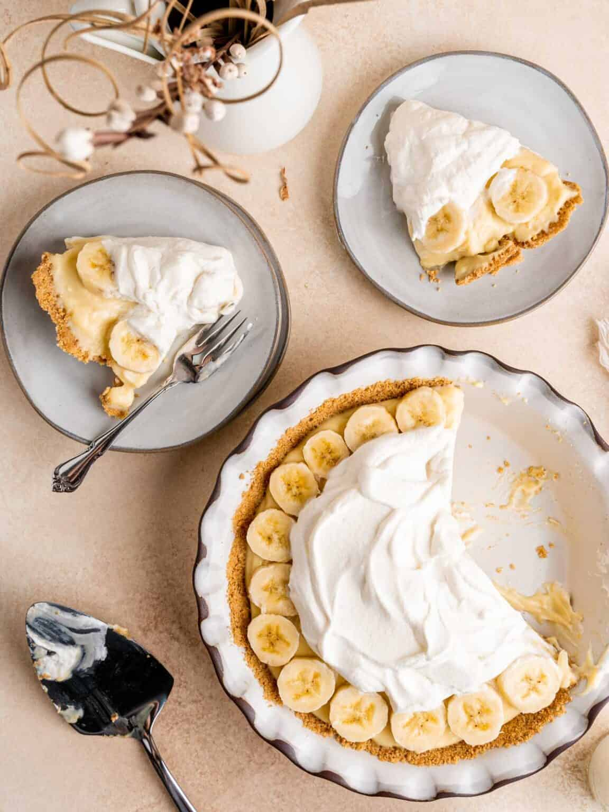

Ooh! Banana (Cream Pie)

Ingredients
Dough for single-crust pie
1 cup sugar
1/4 cup cornstarch
1/2 teaspoon salt
3 cups 2% milk
2 large eggs, lightly beaten, room temperature
3 tablespoons butter
1-1/2 teaspoons vanilla extract
2 large firm bananas
1 cup heavy whipping cream, whipped
Instructions
-
On a lightly floured surface, roll dough to a 1/8-in.-thick circle;
transfer to a 9-in. pie plate. Trim crust to 1/2 in. beyond rim of
plate; flute edge. Refrigerate 30 minutes. Preheat oven to 425°.
-
Line crust with a double thickness of foil. Fill with pie weights, dried
beans or uncooked rice. Bake on a lower oven rack until edge is golden
brown, 20-25 minutes. Remove foil and weights; bake until bottom is
golden brown, 3-6 minutes longer. Cool on a wire rack.
-
In a large saucepan, combine sugar, cornstarch, salt and milk until
smooth. Cook and stir over medium-high heat until thickened and bubbly.
Reduce heat; cook and stir 2 minutes longer. Remove from heat. Stir a
small amount of hot filling into eggs; return all to pan. Bring to a
gentle boil; cook and stir 2 minutes longer.
-
Remove from heat. Gently stir in butter and vanilla. Press plastic wrap
onto surface of custard; refrigerate, covered, 30 minutes.
-
Spread half of the custard into crust. Slice bananas; arrange over
filling. Pour remaining custard over bananas. Spread with whipped cream.
Refrigerate 6 hours or overnight.